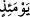
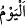

mühim diğer bir grupla savaşmak için veya düşmana kaçıyor hissini verip aldatarak
onlardan belli bir grubu kendisine doğru çekmek sonra da tek başına veya pusudaki
arkadaşlarıyla birlikte tekrar saldırmak için düşmana sırt dönülebilir.
Bu tür bir davranış harp hilelerinden biridir. “veya diğer bölüğe ulaşıp mevzi tutma”
yakında ya da uzakta bulunan diğer bir mümin topluluğa katılarak onlarla birlikte
düşmana karşı savaşmak “durumu dışında” İşte bu iki durum dışında düşmana sırt
dönüp kaçmak haramdır.
Bu iki durumda sırt çevirmek ise gerçekte bir bozgun ve kaçış değil, bilakis daha
etkili savaşabilmek için bir hazırlık mahiyetindedir. Bu iki maksat dışında “kim öyle bir
günde onlara arka çevirirse” yani düşmanla karşılaşma ve savaş sırasında firar etmek
bir yana sırtını onlara çevirirse, demektir. Burada “__WORD__” (öyle bir günde” ifadesi, “o
vakit” mânâsınadır. Çünkü “__WORD__” kelimesi, mutlak olarak kullanıldığında “gündüz”
mânâsına olsa da uzun zamana yayılmayan bir fiille kullanıldığında “vakit” anlamına
gelir. “muhakkak ki, o Allah’ın gazabını hak etmiş olarak döner. Onun” savaştan
kurtulmak için kaçıp sığınmak istediği yere karşılık olarak âhiretteki “yeri de
cehennemdir.” Me’vâ, insanın varıp sığındığı yerdir. “Orası” cehennem “varılacak”
dönülecek “ne kötü yerdir!”
Bu tehdit (vaîd), zâhir bakımından kesinlik ifade etse de savaş anında düşmana
arkasını dönen herkese şâmil olmayıp kâfirlerin müslümanların iki katından fazla
olmadığı durumlara mahsustur. Çünkü bu sûrenin son tarafında olan bir âyette: “Şimdi
Allah yükünüzü hafifletti; sizde zayıflık olduğunu bildi. O halde sizden sabırlı yüz
kişi bulunursa (onlardan) iki yüz kişiye galip gelir. Ve eğer sizden bin kişi olursa,
Allah’ın izniyle (onlardan) iki bin kişiye galip gelirler. Allah sabredenlerle
beraberdir.” (el-Enfâl, 8/66) buyurularak bir müslümanın en fazla iki kâfirle savaşma
durumunda olduğu bildirilmiştir.
İbn Abbas (r.a.) der ki: “Üç kişiden kaçan, kaçmamış sayılır. İki kişiden kaçan ise
savaştan kaçmış olur.” yani, büyük günahlardan olan savaştan kaçma günahını işlemiş
olur.
Mesnevî’de der ki:
Sen, bir fareden ürküp uçan bu akılla
O savaş safına karışıp nasıl kılıç çekeceksin?
Savaş bu, bulgur aşı değil ki
Yenlerini sıvayıp yemeye girişesin
Bulgur aşını kaşıklamaya benzemez burası, kılıcı gör
Bu safta demirden bir Hamza gerek
Savaş, öyle hayal gibi bir hayalden
Ürküp kaçan her yüreksizin işi değil
Savaş Türklerin işidir, nazenîn kadınların değil